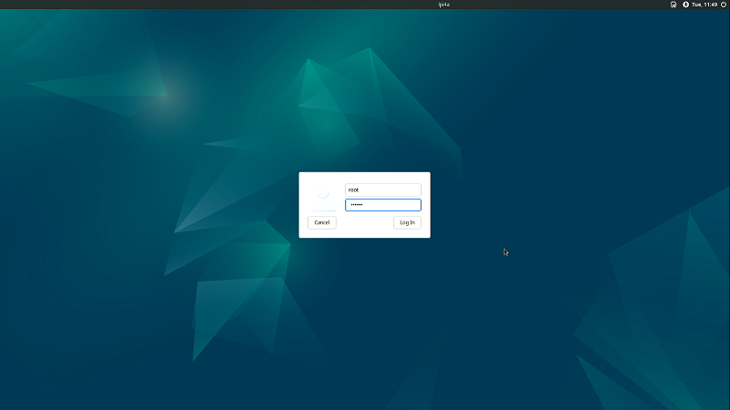
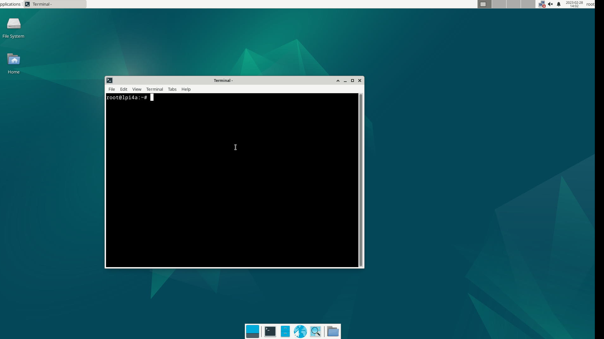
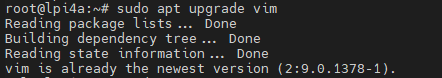
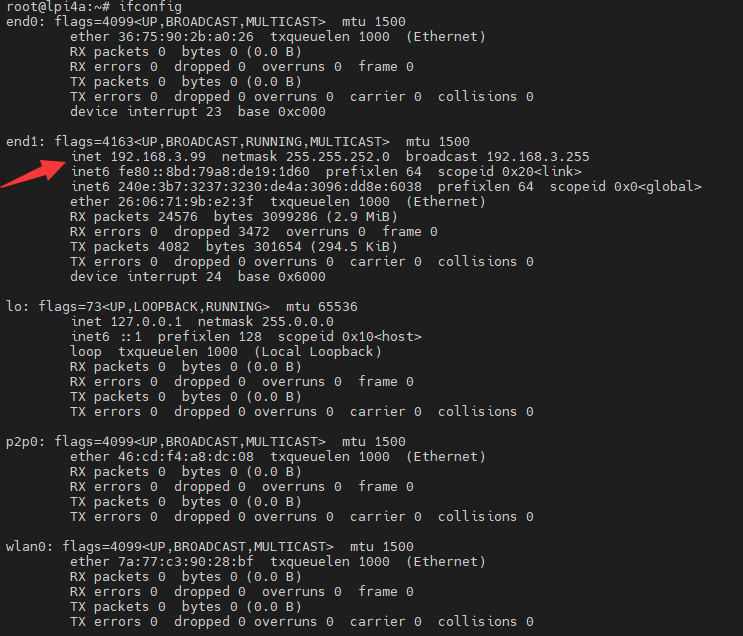
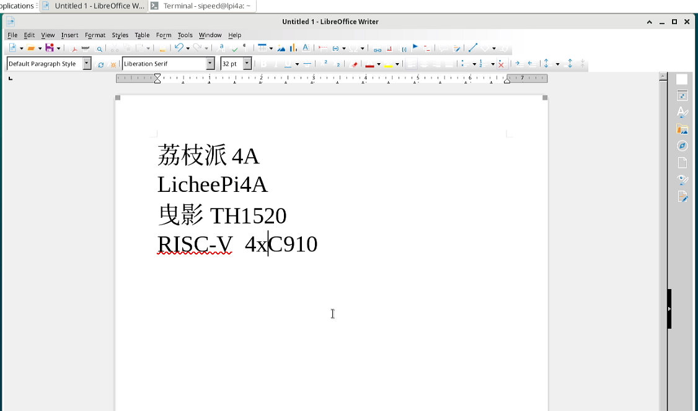
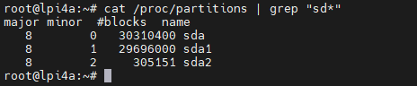

桌面系统基础使用
Update history
| Date | Version | Author | Update content |
|---|---|---|---|
| 2023-05-08 | v1.0 | wonder |
|
登录系统
本篇文档以默认的 Debian 桌面系统为例，介绍基础系统使用操作。
将 LicheePi 4A 连接上显示器后，可以看到图形化交互界面了。
在登录界面，输入用户名 sipeed，密码 licheepi 就可以登录进系统了。
总共有三个用户，
root，debian，sipeed，初始密码均为licheepi
有些版本的debian用户的密码为sipeed

打开命令行
在 LicheePi 4A 的 Debian 图形化系统中，使用快捷键 Ctrl + Alt + T 三个组合键可以直接打开命令行终端，来快速方便地操作系统。

连接网络
连接有线网络
LicheePi 4A 由两个千兆网络接口；将已经接通网络的网线插入到 LicheePi 4A 的网络接口中节能实现连接有线网络了。
| 插上网线之前 | 插上网线之后 |
 |
|
上面两张图对比可以看到：在接上网线前，系统中 Ethernet Network 下面显示着 disconnected, 接上网线后显示 Wired connection |
|
连接无线网络
LicheePi 4A 板载无线模组，支持蓝牙和 wifi 。
从状态栏中的 Avaliable networks 中查看自己想要连接到的无线网络，输入密码之后就自动连接上了。
 |
 |
在输入密码的弹出窗口中，Wi-Fi adapter 中需要选择 wlan0 来连接网络。
软件安装
在完成网络连接后，即可进行软件包的更新，安装。
软件源
在 Debian 系统中，可以使用 apt (Advanced Packaging Tool) 来进行软件的安装。
安装软件的时候，会从系统指定的软件网站中搜索并下载目标软件，当目标网站访问困难（比如服务器距离太远或者服务器网络不佳）时，可以手动设置编辑软件源网站，改成距离自己当前最近的源，来减少下载时间。
软件源默认使用 /etc/apt/sources.list 文件里面的内容，有额外需要的话可以自行更改。但是要注意需要使用支持 Risc-V 架构的软件源。

升级软件
使用 sudo apt update 可以更新软件列表，一般在更换软件源之后需要使用这个命令。
然后使用 sudo apt upgrade package_name 可以更新名称为 package_name 的软件。
比如下面是使用 sudo apt upgrade vim 来更新 vim 这个软件的示例

安装程序
可以借助于 apt 命令来安装软件；比如使用 sudo apt install package_name 命令来安装 package_name，下面是使用 apt 来安装 net-tools 的例子。

安装 net-tools 后，就可以使用 ifconfig 命令了。

箭头指向的地方就是常说的 IP 地址了。
SSH
如果你的镜像里没有 ssh 或 sshd 指令，可以先通过以下指令安装：
sudo apt install ssh openssh-server
安装之后即可使用 ssh 来远程登录到其它机器操作，或者在其它机器上使用 ssh 登录到 LicheePi 4A
还可以使用 scp 进行文件传输：
scp demo.zip sipeed@192.168.1.9:~/
输入法
如果你需要进行非 ascii 的字符输入，就需要安装输入法，这里以中文输入法为例，其它语言请自行查找相关教程。
先安装 ibus-libpinyin：
sudo apt install -y ibus-libpinyin
注意这里会消耗约200MB磁盘空间
安装完后，重启板卡，即可在 Applications 下看到 IBus Preference 选项，点击进入设置。
在出现的界面里点击 Input Method，点击 Add，选择 Chinese，选择 Intelligent Pinyin，点击 Add，即可添加中文拼音输入法。

在右上角点击输入法图标，可见以下选项，选择 Chinese - Intelligent Pinyin 即可。

此时即可在系统中顺利输入中文：
注：在 0425 版本镜像中，可能会由于 GPU 支持问题，导致安装了输入法后，出现图形界面卡顿滞后的问题。
办公软件
部分镜像内置了基础的 Office 办公软件（LibreOffice）：

LibreOffice Calc 即 XLS 功能：

LibreOffice Impress 即 PPT 功能：
LibreOffice Writer 即 WORD 功能：

浏览器
系统内置了火狐浏览器（Firefox）：
使用搜索引擎：
观看在线视频：
注：由于目前（0425）版本还未完全适配好 GPU，视频编解码使用 CPU 软解，所以浏览器下播放视频占用率较高。实际性能以未来的 GPU 适配完成的镜像为准。
播放器
系统内置了一些开源播放器，我们建议使用 VLC Player 作为视频播放器

编程开发
Python
系统已内置了 python3 环境，可以在终端直接运行：
如果需要安装Python包，则使用：sudo apt install python3-XXX
比如安装pyserial包：sudo apt install python3-serial 即可
C
需要安装 build-essential 包，占用约800MB磁盘空间
sudo apt install build-essential
然后即可使用 gcc 进行相关编译操作：

扩展存储空间
内测版板载 eMMC 容量较小，留给用户的空间只有 2～3GB，如果需要进行大容量存储，则需要扩展存储空间，可选使用 USB 存储或者 TF 存储。
挂载 U 盘
将一个 U 盘插入 LicheePi 4A 的 USB 口后，可以在命令终端窗口使用 dmesg 查看板卡硬件变动信息。
如下是连接 U 盘后，使用 dmesg 在命令行终端看到的最新信息（截取）。

上面的信息显示出了板卡的外设更改信息；从中可以看到有一个大容量 USB 存储设备连接到了 LicheePi 4A。
使用命令 cat /proc/partitions | grep "sd*" 命令可以查看到 U 内部的分区个数

以上面的结果为例，其中 sda 指代的是整个 U 盘，sda1 和 sda2 表示的是 U 盘里面的两个分区。
先在桌面系统创建一个文件夹，然后使用 mount 命令将 U 盘的某一分区挂载到该文件夹下。
mkdir ~/Desktop/udisk # 在桌面创建一个名为 udisk 的文件夹
mount /dev/sda2 ~/Desktop/udisk # 挂载 U 盘的 sda2 分区到 udisk 文件夹
| 运行命令前 | 运行命令后 |
 |
|
运行命令后桌面新增了一个名为 udisk 的文件夹，使用鼠标双击打开 udisk 文件夹后可以看到文件夹里面的内容与 U 盘里面的实际内容一致  |
|
挂载 TF卡
将 TF 卡插入 LicheePi 4A 背面的 TF 卡槽中，即可在系统下看到 /dev/mmcblk1 设备 （/dev/mmcblk0 是 SOM 上的 eMMC）
如果 TF 卡尚未分区或者格式化，用户可以使用 sudo fdisk /dev/mmcblk1 指令进行分区，
然后使用 sudo mkfs.ext4 /dev/mmcblk1p1 或者 sudo mkfs.vfat /dev/mmcblk1p1 对新建的分区进行格式化操作。
如果想作为扩展分区使用，建议使用 ext4；如果想作为与 Windows 交换数据的 TF 卡，建议使用 vfat。
格式化好后，即可与上节内容一样进行挂载操作，确认是否挂载正常。
设置开机挂载
验证手工挂载成功后，你可以进一步设置开机挂载。
只需要在 /etc/fstab 文件内加上需要开机自动挂载的设备信息即可，以下是在最后一行添加TF卡自动挂载的示例。
sipeed@lpi4a:~$ cat /etc/fstab
# UNCONFIGURED FSTAB FOR BASE SYSTEM
/dev/mmcblk0p3 / auto defaults 1 1
/dev/mmcblk0p2 /boot auto defaults 0 0
/dev/mmcblk1p1 /mnt auto defaults 0 2
- 第一个数字：0 表示开机不检查磁盘，1 表示开机检查磁盘；
- 第二个数字：0 表示交换分区，1 代表启动分区（Linux），2 表示普通分区
/dev/mmcblk1p1 也可使用磁盘 UUID，即写成 UUIS=xxxx-xxx 的形式，UUID 可以使用sudo blkid查看：
/dev/mmcblk1p1: UUID="033173ff-b3ab-494c-ab14-4dcd656a9214" BLOCK_SIZE="4096" TYPE="ext4" PARTUUID="8e4e28df-01"
更多
欢迎投稿～ 投稿接受后可得￥5～150（$1~20）优惠券！